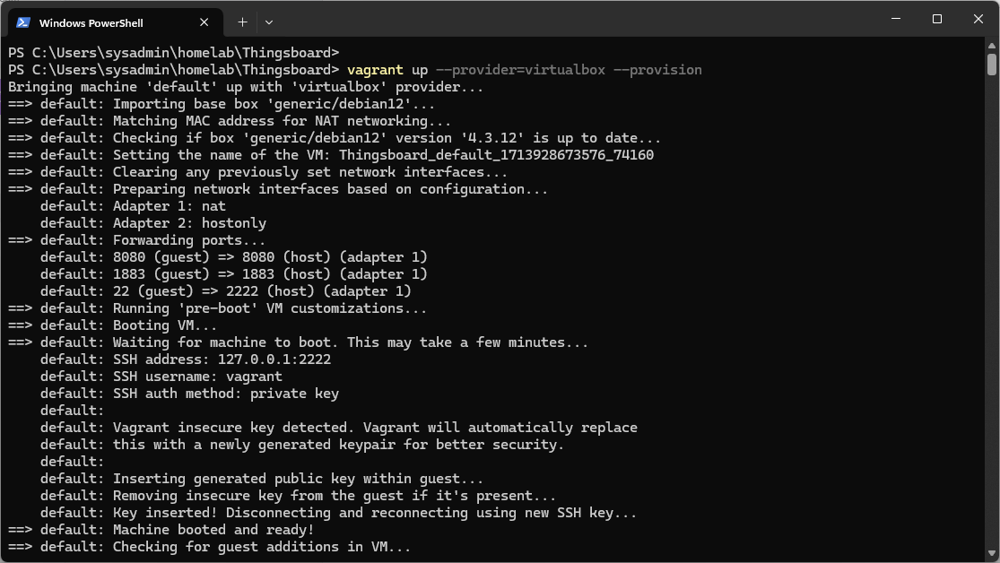
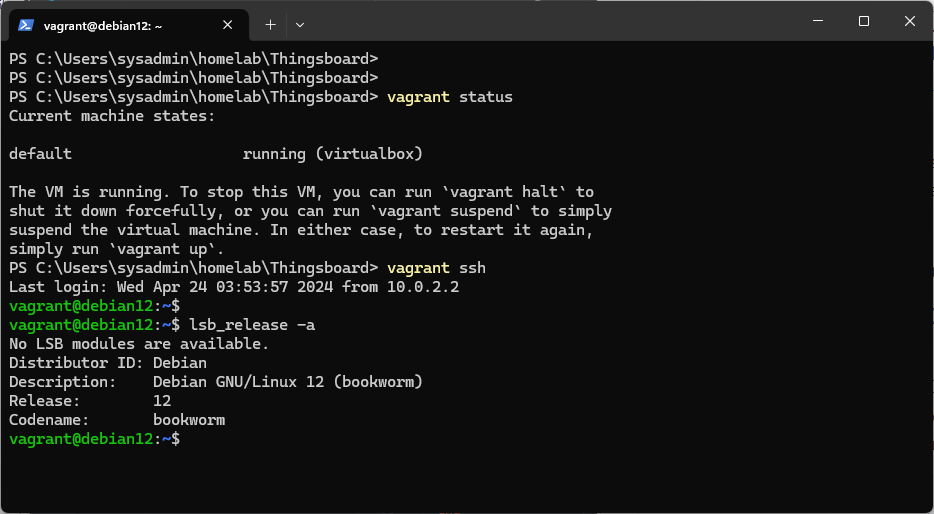

สร้าง Thinsboard Server
ตัวอย่าง สร้าง Thingsboard server
Thingsboard Server คือ
Thingsboard Server เป็นแพลตฟอร์ม IoT (Internet of Things) ที่ใช้สำหรับการจัดการและการควบคุมอุปกรณ์ IoT ต่าง ๆ ได้อย่างมีประสิทธิภาพ ซึ่งออกแบบมาเพื่อให้สามารถจัดการกับอุปกรณ์ IoT จำนวนมากได้โดยมีการรองรับการส่งข้อมูลแบบ real-time อย่างมีประสิทธิภาพด้วยความปลอดภัยสูงสุด
Thingsboard Server มีความสามารถที่สำคัญดังนี้:
-
การจัดการอุปกรณ์ (Device Management): Thingsboard สามารถรับข้อมูลจากอุปกรณ์ IoT และจัดการกับอุปกรณ์เหล่านั้นได้ รวมถึงการเชื่อมต่อ, การลงทะเบียน, การติดตามสถานะ, และการจัดการอื่น ๆ ของอุปกรณ์ IoT.
-
การจัดเก็บข้อมูล (Data Persistence): Thingsboard ช่วยในการจัดเก็บข้อมูลที่ได้รับจากอุปกรณ์ IoT อย่างปลอดภัยและเป็นระบบ โดยสามารถบันทึกข้อมูลได้ในรูปแบบที่ยืดหยุ่น และสามารถเข้าถึงข้อมูลได้จากหน้าต่างสำหรับการวิเคราะห์.
-
การแสดงผลและการจัดเก็บข้อมูล (Visualization and Dashboards): Thingsboard มีความสามารถในการสร้างและแสดงข้อมูลผ่านทางกราฟและตัวชี้วัดต่าง ๆ ที่เกี่ยวข้องกับอุปกรณ์ IoT ซึ่งสามารถเข้าถึงผ่านทางแผงควบคุมหรือ Dashboards ที่กำหนดเอง.
-
การจัดการกฎและการควบคุม (Rules Engine and Control): Thingsboard มีกลไกในการตั้งกฎและการควบคุมที่ทำให้ผู้ใช้สามารถกำหนดการกระทำต่าง ๆ ภายในระบบ IoT ตามเงื่อนไขที่กำหนดได้.
-
ความปลอดภัย (Security): Thingsboard มีการป้องกันความปลอดภัยที่มีประสิทธิภาพ เช่น การรับรองตัวตนและการเข้ารหัสข้อมูล เพื่อปกป้องข้อมูลของอุปกรณ์ IoT และข้อมูลการใช้งาน.
Thingsboard Server เป็นโปรเจกต์แบบ (open-source) ซึ่งทำให้มีความยืดหยุ่นในการปรับแต่งตามความต้องการขององค์กร และมีชุมชนที่พร้อมให้การสนับสนุนและพัฒนาเพิ่มเติมอย่างต่อเนื่อง

สร้าง Thingsboard Server บน Debian 12 และหลังจากสร้าง VM ก็จะทำการติดตั้ง docker engine
- หลังจากนั้น ให้ Download ไฟล์ Thingsboard.zip ไปไว้ folder homelab และทำการแตก zip ให้เรียบร้อย
- Run คำสั่ง vagrant
vagrant up --provision=virtualbox --provision
ผลลัพท์

- Run คำสั่ง
vagrant ssh,vagrant up
ผลลัพท์

File Vagrantfile สำหรับ lab นี้จะสร้าง VM จาก Debian 12 (Box) และมีการ Run Script เพื่อติดตั้ง Docker Engine โดยใช้รูปแบบการ Run แบบ inline script และ จะใช้ คำสั่ง Docker compose เพื่อสร้าง containers
# -*- mode: ruby -*-
# vi: set ft=ruby :
# All Vagrant configuration is done below. The "2" in Vagrant.configure
# configures the configuration version (we support older styles for
# backwards compatibility). Please don't change it unless you know what
# you're doing.
$script = <<-SCRIPT
# genkey
# Add Docker's official GPG key:
sudo apt-get install ca-certificates curl -y
sudo apt-get install openssh-server -y
systemctl restart sshd.service
sudo curl -fsSL https://download.docker.com/linux/debian/gpg -o /etc/apt/keyrings/docker.asc
sudo chmod a+r /etc/apt/keyrings/docker.asc
# Add the repository to Apt sources:
echo \
"deb [arch=$(dpkg --print-architecture) signed-by=/etc/apt/keyrings/docker.asc] https://download.docker.com/linux/debian \
$(. /etc/os-release && echo "$VERSION_CODENAME") stable" | \
sudo tee /etc/apt/sources.list.d/docker.list > /dev/null
sudo apt update -y
# Install Docker Compose
sudo apt-get install docker-ce docker-ce-cli containerd.io docker-buildx-plugin docker-compose-plugin -y
usermod -aG docker vagrant
# create folder for moute data
sudo -u vagrant mkdir -p /home/vagrant/.thingsboard-data && sudo chown -R 799:799 /home/vagrant/.thingsboard-data
sudo -u vagrant mkdir -p /home/vagrant/.thingsboard-db && sudo chown -R 799:799 /home/vagrant/.thingsboard-db
sudo -u vagrant mkdir -p /home/vagrant/.thingsboard-logs && sudo chown -R 799:799 /home/vagrant/.thingsboard-logs
# Run docker compose
sudo -u vagrant docker compose -f /vagrant/docker-compose.yml up -d
SCRIPT
Vagrant.configure("2") do |config|
config.vm.box = "generic/debian12"
config.vm.network "private_network", ip: "192.168.33.10"
config.vm.network "forwarded_port", guest:8080 , host: 8080
config.vm.network "forwarded_port", guest:1883 , host: 1883
config.vm.synced_folder ".", "/vagrant", type: 'rsync'
config.vm.provider "virtualbox" do |vb|
vb.customize [
"modifyvm", :id,
"--nested-hw-virt", "on",
"--memory", "2048",
"--paravirtprovider", "hyperv",
"--cpus", "2"
]
end
config.vm.provision "shell" , inline: $script
end
File docker-compose.yml เป็น Bash script ไว้สำหรับ Run ใน Debian สำหรับการติดตั้ง Docker , Docker compose
services:
thingsboard:
restart: unless-stopped
image: "thingsboard/tb-postgres"
expose:
- "8080"
ports:
- "8080:9090"
- "1883:1883"
- "7070:7070"
- "5683-5688:5683-5688/udp"
environment:
TB_QUEUE_TYPE: in-memory
SPRING_DATASOURCE_URL: jdbc:postgresql://postgres:5432/thingsboard
SPRING_DATASOURCE_PASSWORD: postgres
SPRING_DATASOURCE_USERNAME: postgres
volumes:
- /home/vagrant/.thingsboard-data:/data
- /home/vagrant/.thingsboard-logs:/var/log/thingsboard
links:
- postgres
depends_on:
- postgres
postgres:
restart: unless-stopped
image: "postgres:15"
ports:
- "5432"
environment:
POSTGRES_DB: thingsboard
POSTGRES_PASSWORD: postgres
volumes:
- /home/vagrant/.thingsboard-data/db
- เปิด terminal พิมพ์ คำสั่ง ipconfig เพื่อดูค่า ip ที่ได้รับจาก Router

- เปิด browser http://<ip_address>:8080
Default system administrator account:
login - sysadmin@thingsboard.org
password - sysadmin
Default demo tenant administrator account:
login - tenant@thingsboard.org.
password - tenant.
Demo tenant customers:
Customer A user: customerA@thingsboard.org.
Customer B user: customerB@thingsboard.org.
Customer C user: customerC@thingsboard.org.
all users have “customer” password.
คำสั่ง Vagrant
- คำสั่ง พื้นฐาน สำหรับ บริหารจัดการ VB
- vagrant up --provider=virtualbox --provision
- vagrant halt
- vagrant up
- vagrant destroy
- คำสั่ง สำหรับการ ssh เข้าไปใน VM
- ตรวจสอบ ssh config
- vagrant ssh-config
- vagrant ssh
- ตรวจสอบ ssh config
ต่อไปจะเรียนรู้การใช้งาน Thingsboard iot gateway